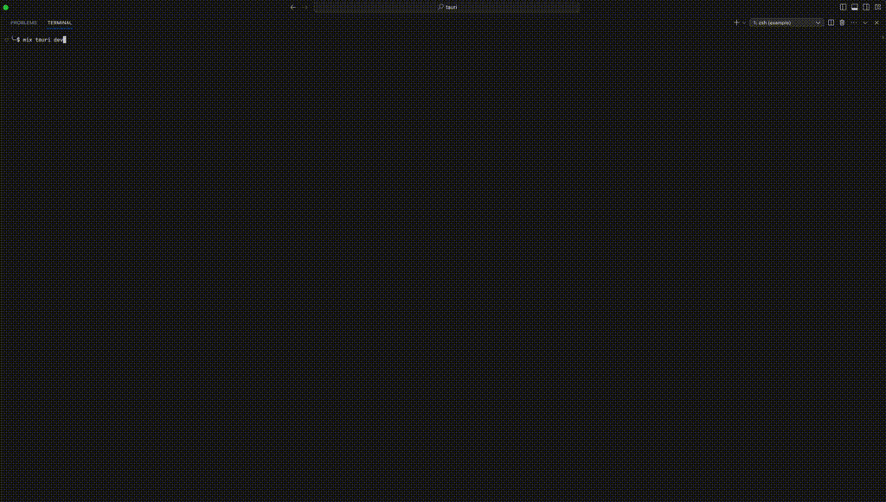

ExTauri wraps Tauri so your Phoenix LiveView application runs as a native desktop app on macOS, Windows, and Linux — with notifications, dialogs, system tray, filesystem access and more, all driven from Elixir. No JavaScript required.
mix ex_tauri.install
MIT licensed · Elixir ≥ 1.15 / OTP 27 · Powered by Tauri 2 & Burrito

Keep writing Phoenix the way you already do. ExTauri handles the native shell, the desktop APIs, the packaging, and the lifecycle.
Your Phoenix app renders inside a native Tauri window — same code, same components, now a real desktop application.
Notifications, dialogs, clipboard, filesystem, window management, global shortcuts — with callback-style responses via use ExTauri.LiveView. No JavaScript required.
ExTauri.Desktop sends notifications and drives the system tray from GenServers and background jobs — no browser involved.
mix ex_tauri.add dialog fs wires the Rust side for you: Cargo dependency, plugin registration, and permissions.
Subscribe to drag-and-drop, deep links, or custom Rust events and handle them like any other LiveView event.
mix ex_tauri.dev runs your Phoenix dev server inside the native window — code reloading and live reload just work.
Open and close secondary native windows straight from your LiveView, no extra plumbing.
Uses Burrito to bundle the BEAM, your app, and its assets into one executable, then Tauri packages it per platform.
A heartbeat-based mechanism guarantees clean shutdown on CMD+Q, crashes, or force-quit — even on platforms without SIGTERM.
ExTauri uses Igniter for safe, AST-aware setup — it patches your config, supervision tree, layout, and JS for you.
Add ExTauri to your existing Phoenix project. You'll need Elixir ≥ 1.15 with OTP 27, plus Rust and the Tauri platform prerequisites.
def deps do
[
{:ex_tauri, git: "https://github.com/filipecabaco/ex_tauri.git"}
]
endOne command scaffolds everything.
mix deps.get
mix ex_tauri.installapp_name, host, port and version in config/config.exssrc-tauri/ with Rust code, config, and capabilitiesExTauri.ShutdownManager to your supervision tree and a :desktop release to mix.exsassets/js/app.js and your root layoutYour app opens in a native window running the actual mix phx.server dev loop — live reload works exactly as in the browser.
mix ex_tauri.dev--prod-sidecar to test against a compiled release, and review the generated config/config.exs to customize your app name, port, or window settings.Add use ExTauri.LiveView and every API accepts a trailing callback that receives the result — no manual event pattern-matching. The JS bridge uses Tauri's global API, so a stock Phoenix esbuild setup just works.
Open native file pickers and handle the result inline with a callback — success and error branches, right where you need them.
defmodule MyAppWeb.HomeLive do
use MyAppWeb, :live_view
use ExTauri.LiveView
def handle_event("pick_file", _params, socket) do
socket =
ExTauri.Dialog.open(socket, [title: "Pick a file"], fn
{:ok, %{"path" => path}}, socket -> assign(socket, :file, path)
{:error, _reason}, socket -> put_flash(socket, :error, "No file selected")
end)
{:noreply, socket}
end
endSend native desktop notifications from any LiveView event handler. Works out of the box after mix ex_tauri.install.
def handle_event("notify", _params, socket) do
socket = ExTauri.Notification.send(socket, "Saved!", body: "Your file was saved.")
{:noreply, socket}
end
def handle_event("tauri_response", %{"command" => "notification", "status" => status}, socket) do
{:noreply, assign(socket, :notification_status, status)}
endSubscribe to native events — drag-and-drop, window focus, deep links, custom Rust events — and drive the native window from app state.
def mount(_params, _session, socket) do
socket =
if connected?(socket) do
ExTauri.Event.subscribe(socket, "tauri://drag-drop")
else
socket
end
{:ok, socket}
end
# React to files dropped onto the window
def handle_event("tauri_event", %{"event" => "tauri://drag-drop", "payload" => %{"paths" => paths}}, socket) do
{:noreply, assign(socket, :dropped_files, paths)}
end
# Update the native window title as app state changes
def handle_event("open_document", %{"name" => name}, socket) do
{:noreply, ExTauri.Window.set_title(socket, "#{name} — MyApp")}
endExTauri.Desktop talks to the frontend over ExTauri's internal channel, so it works from any process — background jobs, GenServers, PubSub handlers. No LiveView, no browser.
# Notify from a background job
ExTauri.Desktop.notify("Sync complete", body: "128 records updated")
# Define a system tray from Elixir; clicks arrive as messages
ExTauri.Desktop.set_tray(
tooltip: "My App",
items: [%{id: "sync", label: "Sync now"}, %{id: "quit", label: "Quit"}]
)
ExTauri.Desktop.subscribe()
# ... later, in handle_info:
{:ex_tauri_event, "tray_menu_click", %{"id" => "sync"}}These work out of the box after mix ex_tauri.install:
ExTauri.Notification | Native desktop notifications |
ExTauri.Shell | Open URLs, execute scoped commands |
ExTauri.Window | Minimize, fullscreen, title, size, … |
ExTauri.Event | Drag-and-drop, focus, custom Rust events |
ExTauri.App | App name & version info |
ExTauri.Desktop | Server-side notifications & system tray |
mix ex_tauri.add <plugin> wires the Cargo dep, plugin registration, and permissions:
ExTauri.Dialog | mix ex_tauri.add dialog |
ExTauri.Clipboard | mix ex_tauri.add clipboard |
ExTauri.Filesystem | mix ex_tauri.add fs |
ExTauri.OS | mix ex_tauri.add os |
ExTauri.GlobalShortcut | mix ex_tauri.add global-shortcut |
ExTauri.Autostart | mix ex_tauri.add autostart |
ExTauri.Updater | mix ex_tauri.add updater |
| Deep links | mix ex_tauri.add deep-link |
Tauri launches your Phoenix app as a sidecar process. The WebView renders your LiveView UI over HTTP, while a separate local socket carries the shutdown heartbeat plus a duplex JSON channel for server-side desktop features.
The app binds Phoenix to an OS-assigned free port. The Rust shell passes PORT, PHX_SERVER, PHX_HOST, and a generated SECRET_KEY_BASE to the sidecar — standard Phoenix runtime.exs picks these up — and navigates the window once the server is up.
The Rust frontend sends a byte every 100 ms over a local socket; ExTauri.ShutdownManager checks every 500 ms. If nothing arrives for 1500 ms, Phoenix closes connections, flushes logs, and exits cleanly — even on force-quit, crash, or platforms without SIGTERM like Windows.
On macOS/Linux the heartbeat rides a Unix domain socket; on Windows, a loopback TCP socket with a published port file. The path is derived from your :app_name, so multiple ExTauri apps never collide.
In development, EX_TAURI_PORT pins the configured port so live-reload URLs always match.
Add Burrito wrapping to your :desktop release, then mix ex_tauri.build produces signed-ready, platform-native packages under src-tauri/target/release/bundle/.
releases: [
desktop: [
steps: [:assemble, &Burrito.wrap/1],
burrito: [
targets: [
"aarch64-apple-darwin": [os: :darwin, cpu: :aarch64]
]
]
]
]mix ex_tauri.buildThe repository ships standalone demo apps — each one a full Phoenix LiveView project that runs as a native window — plus a complete example app with SQLite, LiveView, and Tailwind CSS.
notification_hub — Unified Notification InboxA realtime inbox aggregating notifications from GitHub, Linear, Gmail and Slack. Each provider is its own supervised GenServer — kill one in IEx and the rest keep streaming. The LiveView never polls: it subscribes to PubSub and re-renders on broadcasts.
pomodoro_farm — Concurrent Timer BoardFire up any number of focus/break timers and watch them tick in parallel. Every timer is its own GenServer under a DynamicSupervisor, found via a Registry — true BEAM concurrency, not fake setInterval. Crash one and the rest are unaffected.
Two commands stand between your Phoenix project and a native app.